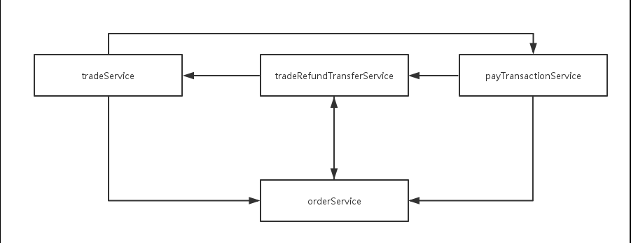
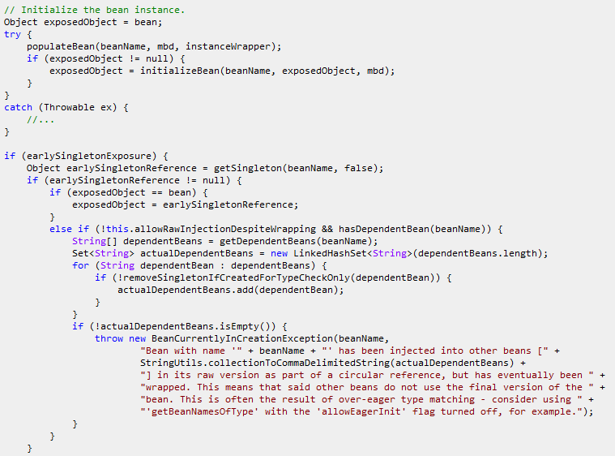
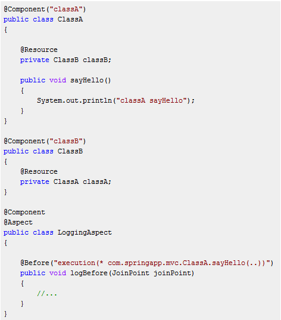
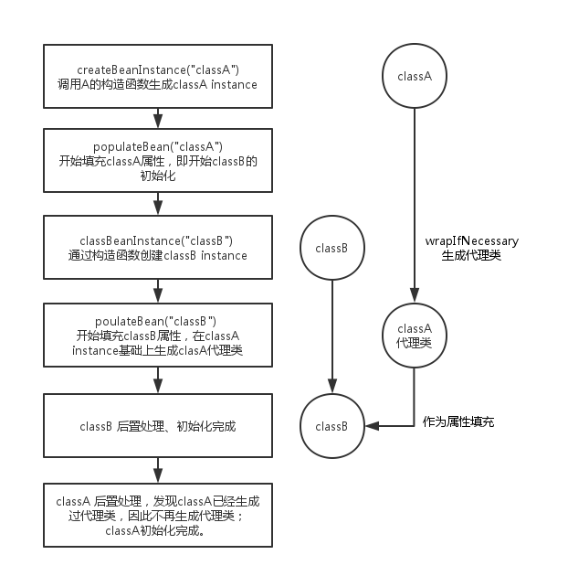
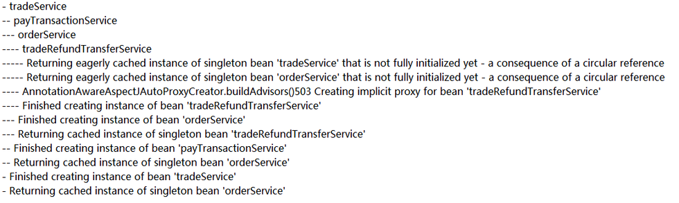
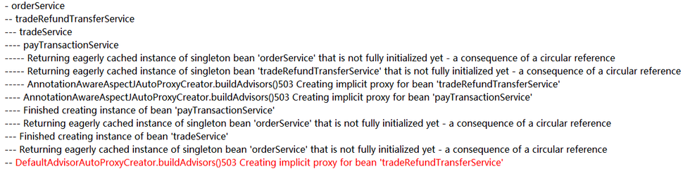
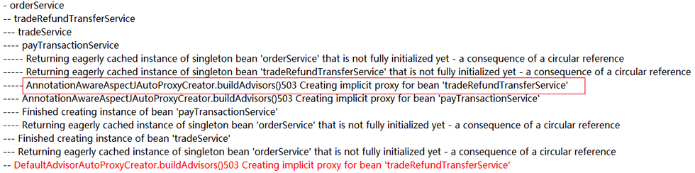
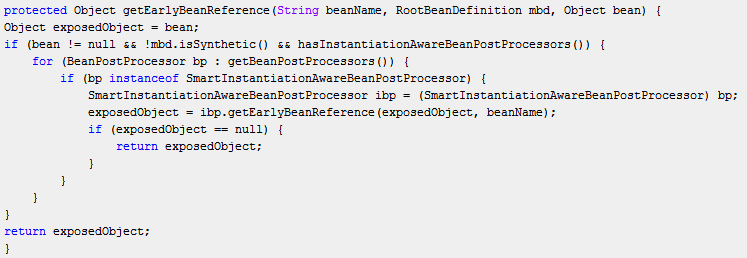
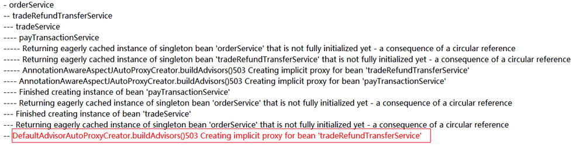
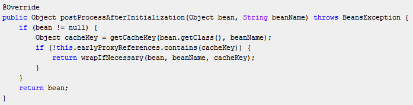

Spring循环依赖报错问题分析
一、前言
=======
Spring工程在本地环境部署没问题，在预发布环境报了一个与循环依赖有关的错误。经过排查发现，报错的直接原因是不同环境bean的初始化顺序不同，根本原因是Spring二次代理问题。
二、问题分析
=========
报错如下:
Bean with name ‘beanName’ has been injected into other beans [actualDependentBeans] in its raw version as part of a circular reference, but has eventually been wrapped. This means that said other beans do not use the final version of the bean. This is often the result of over-eager type matching - consider using ‘getBeanNamesOfType’ with the ‘allowEagerInit’ flag turned off, for example.
乍看之下，似乎就是由循环依赖引起的问题。事实上，通过消除应用中的循环依赖，报错也确实没有了。然而，Spring是支持循环依赖的，循环依赖不应该是问题的根本原因。
1、类间依赖关系分析
既然是与循环依赖有关的错误，那么先把循环依赖关系列出来。这个循环依赖涉及4个类，类间依赖关系如下：

从上图可以看出4个类之间存在复杂的循环依赖关系。然而，在复杂的工程之中，循环依赖关系并不少见。
2、通过Spring源码定位问题
上述报错的位置是AbstractAutowireCapableBeanFactory的doCreateBean方法。

从上面的代码可以推断，上述报错出现需要满足如下条件：
1、存在循环依赖（明显存在）
2、initializeBean 方法返回了一个新对象
因此问题在于，initializeBean方法的用途，以及为什么返回了一个新的对象。
2.1 initializedBean方法分析
initializeBean方法的注解是 Initialize the given bean instance, applying factory callbacks as well as init methods and bean post processors
initializeBean方法主要完成：
步骤1、applyBeanPostProcessorsBeforeInitialization
步骤2、invokeInitMethods 调用bean的init-method
步骤3、applyBeanPostProcessorsAfterInitialization
步骤1和3都是对BeanPostProcessor的调用。BeanPostProcessor可能包括某些ProxyCreator，ProxyCreator 可能对原始bean做代理，返回一个新的代理类。
即是说，initializeBean方法返回一个新的代理对象是可能且合理的，但是从上文的分析知道，在存在循环依赖的情况下只要initializeBean方法返回了一个新对象就会报错。
那么Spring是如何处理循环依赖情况下代理类的生成的呢？
2.2 存在循环依赖情况下代理类的生成分析
下面是用于测试循环依赖情况下代理类生成的代码：

上面的代码并不会报错。
下面是对存在循环依赖情况下，classA和classB的初始化过程的分析。

通过上面的分析可以知道，在存在循环依赖的情况下，由于classB初始化过程中已经对classA生成了代理类，所以在initiliazeBean方法中并不会返回新的代理类，因为不会报错。
问题分析至此，知道对于存在循环依赖和代理的情况，Spring一般也是能够正确处理的。
2.3 从Spring debug日志切入 定位问题原因
由于本地环境部署工程不会报错，而预发布环境又无法调试。要获得更详细的信息，只能够通过Spring的debug日志获得。
拿到本地和预发布环境的Spring debug日志之后，把所有跟tradeService、tradeRefundTransferService、orderService、payTransactionService相关的日志都提取出来。
经过分析发现，本地与预发布环境，在bean的初始化顺序上存在差异。
本地环境bean的初始化顺序如下：

预发布环境bean的初始化顺序如下：

注意到，预发布环境有两个ProxyCreator AnnotationAwareAspectJAutoProxyCreator和DefaultAdvisorAutoProxyCreator先后对tradeRefundTransferService做了代理。
DefaultAdvisorAutoProxyCreator对tradeRefundTransferService做了代理之后，将会导致其他bean引用到的tradeRefundTransferService并不是最终版本，从而导致报错。
因此问题的关键在于，为什么在预发布环境DefaultAdvisorAutoProxyCreator会对tradeRefundTransferService又做了一次代理，而本地环境却不会呢？
2.4 最终分析
通过Spring debug日志 发现问题是由bean的初始化顺序不同引起的。在本地通过使用@dependsOn annotation 使本地环境的bean初始化顺序与预发布环境相同之后，果然复现了预发布环境的错误。
0、关于ProxyCreator和cacheKey的简单说明
每个ProxyCreator有一个名为earlyProxyReferences属性，这个属性是Set类型，用来保存通过这个ProxyCreator生成过代理类的bean的key值。 比如，如果通过调用ProxyCreatorA的getEarlyBeanReference() 方法生成了一个classA的代理类，那么就会将classA对应的cacheKey放到ProxyCreator的earlyProxyReferences中。 cacheKey的生成规则是className_beanName。当下一次再调用ProxyCreatorA的getEarlyBeanReference方法来获取classA的代理类时，检查发现ProxyCreatorA的earlyProxyReferences已经包含了classA对应的cacheKey，就会直接把上一次调用生成的代理类返回，不会重新生成代理类。 值得注意的是，classA和classA的代理类所对应的cacheKey是不同的。
1、预发布环境二次代理过程
下文中统一把tradeRefundTransferService记为serviceA，tradeRefundTransferService的代理类记为serverA-proxy，AnnotationAwareAspectJAutoProxyCreator 记为proxyCreator1，DefaultAdvisorAutoProxyCreator记为proxyCreator2。
(1) 第一次生成代理
第一次对serviceA生成代理类是在AbstractAutowiredCapableBeanFactory的getEarlyBeanReference方法中。 对应于下图中标注的位置：

在serviceA的初始化过程中，当其他类需要引用到serviceA，但是此时serviceA还没有生成final version（由循环依赖造成），此时为了避免其他类引用到非final version的serviceA，在把serviceA作为属性设置给其他类之前，就需要生成serviceA的代理类serverA-proxy。
AbstractAutowiredCapableBeanFactory的getEarlyBeanReference做的就是这个事情。在这个方法中，先把serviceA的instance拿出来，然后调用各个BeanPostProcessor进行处理，最后把经过处理之后的final version的serviceA返回

在该方法中，proxyCreator1和proxyCreator2会依次对serviceA进行处理。
proxyCreator1的getEarlyBeanReference方法会首先被调用
在这个方法中，会生成serviceA的cacheKey，记为key1，把key1加入到proxyA的earlyProxyReferences中，并生成serviceA的代理类 serviceA-proxy。
随后proxyCreator2的getEarlyBeanReference()方法被调用
由于serviceA已经被代理过，所以此时得到另一个cacheKey，记为key2，key2 会被加入到proxyCreator2 的earlyProxyReferences中
值得注意的是，此时proxyCreator2不会对serviceA再做代理，因为传给proxyCreator2的已经是一个代理类。
(2) 第二次生成代理
第二次对serviceA生成代理类的时机是在AbstractAutowireCapableBeanFactory的initiliazeBean方法中
对应于下图中标注的位置：

如上文所述，这个方法主要是对bean做后置处理。 在这个方法中，同样会依次调用BeanPostProcessor对serviceA进行处理，和上文的getEarlyBeanReference方法类似。
需要注意的是，此时传给initiliazeBean 方法的，并不是serviceA的代理类serviceA-proxy，而是serviceA。
首先是proxyCreator1对serviceA进行处理，依次调用postProcessBeforeInitialization和postProcessAfterInitialization方法。
proxyCreator1的postProcessAfterInitialization方法：

在这个方法中，传入的是serviceA的instance，得到的cacheKey是key1，proxyCreator1 在earlyProxyReferences已经有key1，所以不会再做代理，直接把serviceA返回。
然后是proxyCreator2对serviceA进行处理。
在proxyCreator2的postProcessAfterInitialization方法中，传入的还是serviceA，因为上一步proxyCreator1发现serviceA已经代理过，所以把serviceA原样返回了。 接下来就是最关键的一步了。 proxyCreator2在自己的earlyProxyReferences 没有找到key1，因为如上所述，proxyCreator2的earlyProxyReferences 中存的是key2
然后proxyCreator2对serviceA又做了一次代理，于是就出现了proxyCreator1和proxyCreator2先后对tradeRefundTransferService做了代理的情况。
2、本地环境不会发生二次代理过程
本地环境与预发布环境的不同点在于，在本地环境，由于tradeRefundTransferService是最后初始化的，避免了被做两次代理，所以不会报错。
2.5 解决方案
在工程中，有两个配置文件配置了代理。
第一个地方的配置如下：<bean class="org.springframework.aop.framework.autoproxy.DefaultAdvisorAutoProxyCreator"/>
第二个地方的配置如下：<bean id="aspectJPointcutAdvisor" class="org.springframework.aop.aspectj.AspectJExpressionPointcutAdvisor"> <property name="expression" value="@annotation(com.XXX.XXX.aspect.TransactionAdvice.Transaction)"/> <property name="advice" ref="transactionAdvice"/> </bean>
把第一个地方的配置注释掉之后可以解决上述循环依赖导致的错误。
如果没有必要，不要使用低级别API，比如不要自己手动创建AutoProxyCreator。使用<aop:config proxy-target-class="true"/>或<aop:aspectj-autoproxy/>的方式进行配置。